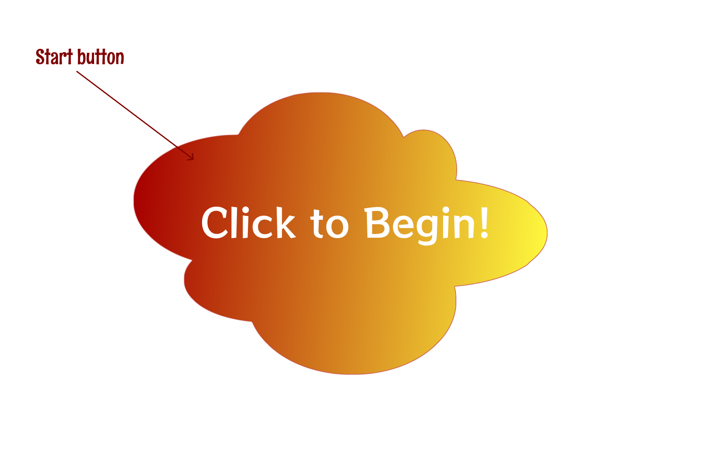
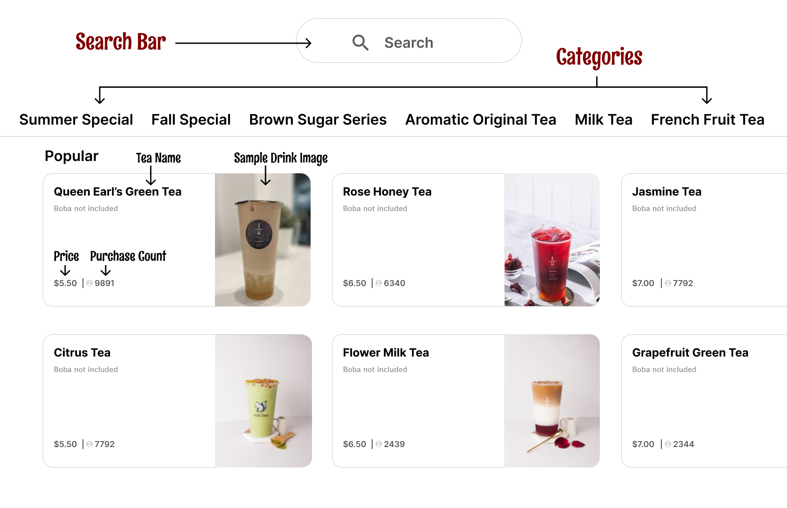

The first screen that appears is a starting screen. Although it doesn't
have much text, it is a very important screen because it tells the user
that the machine is not currently in use!

The next screen we are brought to is the selection screen. Here you can
choose from a wide variety of teas, juices and food items.

We are then brough to the purchase screen which is quite
straightforward. The details of your purchase are listed and you can
make adjustments to your drink so that it is best suited to your tastes!

Note: The above frames are recreated using Figma
Overall users seem to have had a positive experience with the interface.
All 4 users reported having no difficulty using the kiosk.
However, one user mentioned that when they first came to the shop they
found the number of choices to be overwhelming, despite finding the
interface itself to be straightforward.
Most users prefered ordering in person because it allows them to interact
with people and is more efficient.
Conversely, those who prefered the kiosk have this preference because it
allows them to avoid interacting with others.

Chloe is cheerful and energetic. She loves interacting with people,
trying new things, and most importantly, BOBA!
Although she is comfortable using the kiosk, she greatly prefers
ordering in so that she can interact with people. Chloe is a frequent
visitor of Ten One Tea House, and when there are too many people waiting
at the register she chooses to use the kiosk, albeit reluctantly.
Tim works long hours at his office job and often leaves work exhausted.
On his way home he saw a boba shop that his friend Chloe reccommended
and decided to give it a shot.
When Tim entered he was glad to see the kiosk because it allowed him to
avoid talking to people. He found the process simple and easy to
navigate. However he found that there were way too many choices and not
nearly enough descriptions. Having so many options that were practically
mysteries to him was frustrating.
Trevor represents what a new visitor may look like. New visitors are not
invested in the product and consequently less likely to return if their
first impression isn't great.
1

Tim had a long day at work and fell asleep on the job. Yesterday his
friend Chloe recommend that he try boba tea at a shop called Ten One Tea
House that she frequents. After hearing Chloe's description, Tim was
determined to try the drink, so much so that he dreamt of it in his
sleep!
2

Tim's alarm jolts him awake and he realizes that it is finally time to
go home. He packs his bag and heads home.
3

As Tim is biking home he realizes that the shop is on the way and
decides to stop by to grab a drink.
4

Tim finally arrives at Ten One Tea House. He locks his bike against the
lamp post outside and heads inside.
5

When Tim arrives at the shop he groans upon finding out that the line is
VERY long. After looking around a bit he notices that the shop has an
open kiosk and decides to try that instead.
6

Tim has never been to the shop before and is a bit apprehensive about
using the kiosk. However after seeing how simple the start screen seems
he feels some relief.
7

However, when he starts ordering he is bombarded by a million different
teas and toppings to choose from. Tim has never had boba and feels
extremely overwhelmed. He has no clue what most of the drinks even
contain and doesn't see any descriptions to help.
8

After a couple minutes of feeling confused, Tim begrudgingly chooses the
most popular item he can find and settles for the default configuration.
9

The rest of the process flows smoothly. Tim grabs his drink from the
counter once he receives a text and gives his drink a try. He falls in
love with the tea, celebrates and vows to be a frequent customer.
Congrats Tim!!!